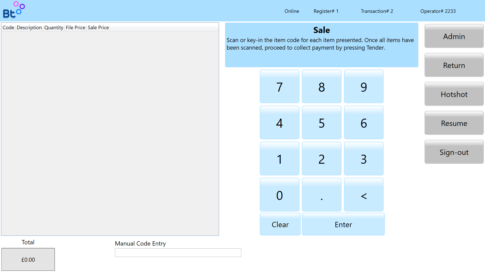
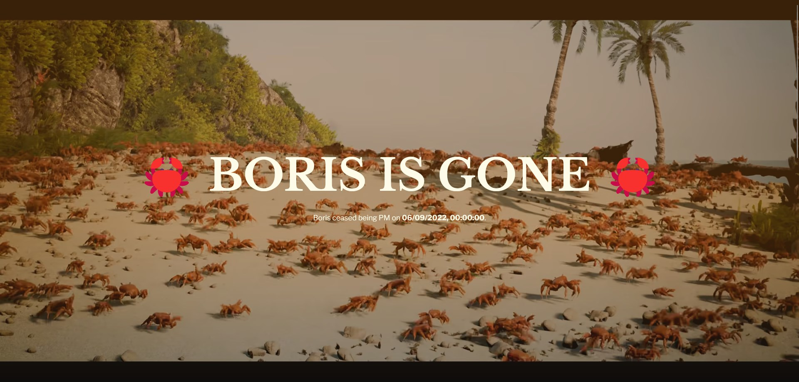
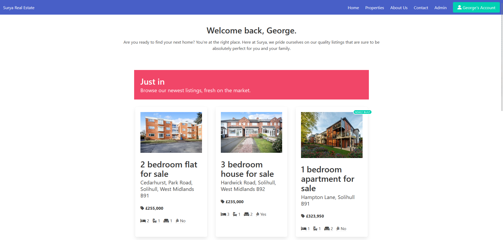
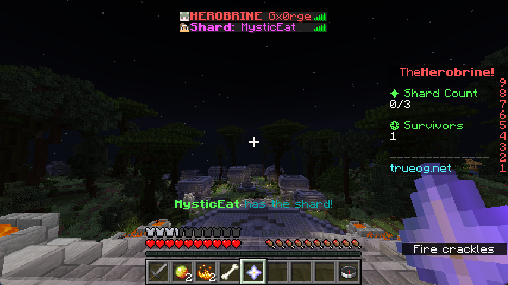

Bubbletill
An all-in-one retail solution
Quick Links
- Source Code: github.com/bubbletill
About
Bubbletill is an all-in-one solution that aims to bring all a store's point of sale needs into one suite of applications. Bubbletill's applications are created with .NET Core 6.
Bubbletill currently has 3 components, with more on the way:
- Point of Sale - The application that members of staff interact with to complete sales.
- Controller API - API for interfacing with the controller's database and services.
- Shell - Application to replace Windows Explorer on the POS devices.

Is Boris Gone?
Recreational website to check if Boris Johnson has resigned
Quick Links
- Source Code: github.com/gxorge/isborisgone
- Live Preview: isborisg.one
About
Is Boris Gone? is a website that me and my friends Thomas and Lewis created to know how long the former Prime Minister, Boris Johnson, had been in office for and if he had resigned. All of the data was pulled automatically from the government's official API.

Surya Real Estate
Created for my BTEC qualification
Quick Links
- Source Code: github.com/georgeatsolihull/surya
- Live Preview: surya.ghott.me
About
Surya Real Estate was created as part of my BTEC course work for Unit 28. The brief required me to create a website for a local real estate agency called Surya. My work was graded distinction.
The website is completely dynamic, fetching data from a live MySQL database based apon views, lised date and more. The site also has a user system, allowing users to register and login. Users are able to save properties to come back and view later.
Feedback
After submission, my instructor made the following comment about my website:
"This is a fabulous submission attempt George. All criteria for this assignment have been met. Distinction."

TheHerobrine!
Remake from The Hive
Quick Links
- Source Code: github.com/gxorge/theherobrine-og
About
The Herobrine! is my remake of an old Hive MC's game-mode that was removed in Java 2. Lobbies contain 13 people, one person of which will become The Herobrine. The Herobrine starts off invisible, but can be seen by a cloud of smoke. It is the survivor's task to collect shards to weaken The Herobrine, and eventually make him visible. The Herobrine must kill all the survivors using his special abilities before the survivors kill him first.
The Herobrine is currently being maintained for the TrueOG network, and can be played there too.
